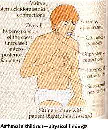

GENERAL PATHOGENESIS OF HYPERSENSITIVITY REACTIONS
Allergy, as any typical pathophysiological process, has certain phases. There are 3 stages in pathogenesis of any true allergic reaction:
- Immunological
- Pathochemical
- Pathophysiological
Immunological (“specific”) phase contains the whole duration of primary immune response towards an offending allergen. Traditionally, primary response, when “innocent” organism acquires the readiness for allergic inflammation, elaborating specific lymphoid clones and antibodies, is called “sensitization”. Allergic sensitization (“allergization”) can be regarded as a kind of excessive and/or poorly regulated primary immune response. Besides sensitization, we shall include into immunological stage of allergic reaction also interaction between offending allergen and specific immune effector (antibody, sensitized lymphocyte), which occurs immediately after the “second contact” of sensitized organism with resolving allergenic challenge. Of course, if an allergen persists within the body (as pathogens in chronic infections) or stays in uninterrupted contact with organism (like autoallergens), the event of “second challenge” in fact does not occur. The primary immune response simply transfigures into secondary one. Anyway, immunologic phase ends with the bondage of an allergen by specific immune effectors. During immunologic phase the allergic readiness of an organism may be artificially decreased by means of medical interference in course of immune response. This procedure is called desensitization.
Desensitization in immunologic phase can be non-specific (achieved through the mechanisms of non-specific immunosuppression, e.g. by means of cytostatic drugs), either specific (established via antigen-specific or idiotype-specific immunosuppression, e.g. by small doses of the appropriate allergen – see below).
It is worth to remind that immunological reactions take part also in banal, non-allergic inflammation. The difference is just quantitative, and the border between “common” and “allergic” inflammation sometimes is not obvious, but relative, estimated in accordance with medical pragmatism.
The allergic inflammation is distinct, for it is started by immunological signals, which is not always the case for other forms of inflammation.
 The pathochemical phase of allergic
process is characterized by liberation, activation and/or biosynthesis of biologically
active substances (autocoids) called mediators of allergy. Sometimes these
autocoids are divided into preformed (primary) and newly synthesized (secondary)
mediators. The trigger for the onset of this phase is the result of previous stage –
interaction of antibodies (in DTH - sensitized lymphocytes) with appropriate allergens.
All autocoids, taking part in allergic reactions also can be characterized as mediators of
inflammation. There is no “specific” chemical mediator of allergic inflammation,
irrelevant to normergic one. But, the content and relative contribution of different
mediators in allergic inflammation may be greater, than it is during common process of
mediocre intensity. For example, anaphylaxis is accompanied by greater synthesis of IL-13
and IL-4 and lower release of IL-12, than banal inflammation and normergic immune
response.
The pathochemical phase of allergic
process is characterized by liberation, activation and/or biosynthesis of biologically
active substances (autocoids) called mediators of allergy. Sometimes these
autocoids are divided into preformed (primary) and newly synthesized (secondary)
mediators. The trigger for the onset of this phase is the result of previous stage –
interaction of antibodies (in DTH - sensitized lymphocytes) with appropriate allergens.
All autocoids, taking part in allergic reactions also can be characterized as mediators of
inflammation. There is no “specific” chemical mediator of allergic inflammation,
irrelevant to normergic one. But, the content and relative contribution of different
mediators in allergic inflammation may be greater, than it is during common process of
mediocre intensity. For example, anaphylaxis is accompanied by greater synthesis of IL-13
and IL-4 and lower release of IL-12, than banal inflammation and normergic immune
response.
Hence, pathochemical stage of allergic reaction is non-specific and the therapeutic interference, addressed to this stage, for example histamine receptor blockers proposed by Nobel prize winner of 1957 D. Bovet, should be regarded as non-specific desensitization.
The pathophysiological phase of allergic reactions is a result of autocoid action over appropriate target cell receptors. It may be displayed as hyperergic inflammation with considerable tissue alteration. The microscopic anatomic pattern of this inflammation can be either predominantly exudative – in ITH, or productive granulomatous – in DTH.

Sometimes pathophysiological effects are manifested in derangement of receptor-mediated regulation of cellular growth and/or functions. In this case allergic reaction gives, instead of inflammation or together with it, different dysregulation phenomena (hyperfunction, hypofunction, hyperplasia or atrophy of target organ).
There is a large class of pathological phenomena, which has the clinical manifestations very close to that of allergic reactions, but does not depend on antibodies or sensitized lymphocytes. These reactions are called allergoid or allergy-like (not to be confused with sometimes used another meaning of the word “allergoid” – chemically modified allergen). For example, if process resemble anaphylaxis, but starts without any role of reagin antibodies, it is called anaphylactoid reaction.
In allergoid reactions the same autocoids are liberated or activated via non-immunological mechanisms. Primary contact with an offensive agent of allergoid reaction may provoke symptoms immediately, without any significant delay.
Primary contact with an offensive agent of allergoid reaction may provoke symptoms immediately, without any significant delay.
Thus, their pathochemical and pathophysiological manifestations are started without prerequisite immunological phase. It is very essential to distinguish between true allergic and allergoid etiology of a process. In case of allergoid reaction therapeutic attempts to alter immune response would not bring clinical relief.
In addition to IgE-mediated triggering, mast cell or basophil degranulation can also be brought about by a variety of other physical and chemical stimuli. Among the mast cell segretagogues are breakdown products of complement (C3a and C5a, anaphylatoxins), some drugs such as sodium chromoglycate, mellitin (present in bee venom), and such physical stimuli as sunlight, trauma, heat, and cold.
Non-immunological challengers, causing mast cell and basophils degranulation can trigger the allergoid reactions. For example, isocyanates, present in synthetic glues, dyes and hermetics, may cause mast cell degranulation via activation of prostaglandin receptors. This results in asthmatic bronchitis, but a patient is not sensitized against any allergen. Many agents (ACTH, codeine, morphine, niacin, and neuropeptides) activate mast cells via their appropriate receptors. So, patient may give some manifestations, misinterpreted as drug allergy, without any sensitization. Non-immunological activators of plasma proteolytic cascades also may provoke allergoid reactions. For example, LPS without antibodies can trigger complement, kinins, fibrinolysis and coagulation, acting as bacterial endotoxins, which reproduce clinical picture of toxic shock (see above), resembling that of systemic anaphylaxis. Some medical students and professionals stay under the influence of wrong idea, that allergoid reactions are rare. Quite opposite, they occur in clinics very often.
According to French epidemiological statistics, up to 40% of bronchial asthma cases among children of big cities are caused by non-allergic, first of all – allergoid mechanisms. Many well-known exanthemas in infectious diseases are produced by allergoid mechanisms, as well as septic shock. The urticary itching rash, provoked by strawberry in many individuals, in majority of cases is caused not by alimentary allergy (although traditionally associated with it). Commonly, the reason is non-specific degranulation of mast cells in response to strawberry lectin, binding reagin receptors.
NEXT CHAPTER
OR